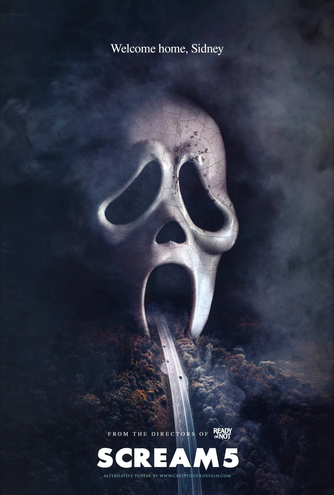

SCRAEM 5
Cast : Jenna Ortega, Courteney Cox, Mikey Madison, Melissa Barrera, Neve Campbell and Skeet Ulrich.
Age Restriction : 13
In Cinemas 7th - May - 2022
Synopsis
Twenty-five years after Billy Loomis and Stu Macher terrorized the town of Woodsboro, high schooler Tara Carpenter is home alone and texting her friend, Amber Freeman. The landline rings and Tara answers only to be confronted by a sadistic caller, who forces her to answer horror trivia by threatening Amber's life. When she gets a question wrong, Ghostface breaks into the house and attacks Tara, breaking her leg and stabbing her multiple times; Tara survives the attack but is badly wounded.
Tara's friend and classmate Wes Hicks informs her older sister Sam Carpenter about the attack. Sam returns to Woodsboro with her boyfriend Richie to visit Tara at the hospital, offering to stay until she recovers. Meanwhile, Wes' mother, Sheriff Judy Hicks, gathers the rest of their friend group - Amber, twin siblings Chad and Mindy Meeks-Martin, and Liv McKenzie - for questioning. Richie, who is unaware of the Stab franchise or its connection to Woodsboro, spends the majority of the hospital visit with Sam catching up on the franchise on YouTube to inform himself of the 'rules' the killer may follow (while another video reveals Kirby Reed survived the events 11 years earlier). After an encounter with Ghostface in the hospital cafeteria, Sam, who struggles with hallucinations of Billy Loomis, discloses to Tara that he is her biological father, the reason why she left town and became estranged from her. Meanwhile, Liv's summer fling Vince Schneider is tormented and murdered by Ghostface outside of a bar. Sam and Richie visit a reclusive Dewey Riley, who has been in a bad place ever since his divorce from Gale Weathers. The two ask for his help in stopping the killer, but he declines and kicks them out. However, Dewey contacts Sidney Prescott and Gale, changing his mind and joining the teens at Mindy and Chad's home. As they attempt to uncover the connection between the killer and Sam, Vince is revealed to be Stu's nephew. With the three attacks being on people related in some capacity to the original killers, Sam is accused of being the killer and angrily flees.
Meanwhile, Ghostface murders Judy and her son and as Sam and Dewey arrive on the scene, the latter reuniting with Gale in the process. Sam and Dewey rush to the hospital when they realize that Tara is in danger. At the hospital, Tara and Richie are attacked by Ghostface, who is apparently killed by an arriving Dewey. Sam, Tara, and Richie escape, but Dewey stays in an attempt to ensure Ghostface is dead, and is himself killed. Sidney returns to Woodsboro upon learning of Dewey's death and reunites with Gale at the hospital. Sidney asks Sam to help take down the killer, but she declines, choosing to leave Woodsboro with Richie and Tara instead. Sidney, having placed a tracker on Richie's car, follows the trio with Gale to Amber's, revealed to be Stu's old house. As the party is in progress to honor Wes' memory, Liv attempts to have sex with Chad, but he declines and accuses her of being the killer but later makes his way outside to apologize, where he is seemingly killed by Ghostface. Mindy is also attacked but Sam intervenes and manages to fend off Ghostface. As the group accuse each other of being Ghostface, Amber shoots and kills Liv, revealing herself as the killer. The rest of the group scatter. When Gale and Sidney arrive, Amber feigns injury but Sidney nor Gale buy her performance and but Amber shoots Gale before running back inside. Sidney runs after her and searches for Amber who has now called her disguised as ghostface but Sidney has had enough and hangs up saying she's 'bored', as Sidney continues to search the house she accidentally injures Richie who is hiding. Suddenly Ghostface attacks Richie before throwing himself and Sidney over the railing and onto the ground floor. Sam is surprised to see Richie alive, but he reveals himself as Tara's attacker and Amber's accomplice, stabbing her.
Amber and Richie take Sam, Sidney, and Gale into the kitchen, revealing they are obsessively dedicated fans of the Stab series, disappointed in its trajectory and wishing to revive the franchise with a new killing spree to act as "source material" and defend fans from the "toxic fandom" label they feel they have unjustly received. Amber goes to retrieve the captured Tara but is attacked by her, having been untied by Sam; this distracts Richie long enough for Sidney and Sam to briefly overpower him. Sidney and Gale fight Amber while Sam fights Richie. Gale shoots Amber, who lands on the stove and is lit aflame before she is shot dead by Tara. Richie taunts a seemingly helpless Sam but she retrieves Amber's knife and stabs Richie multiple times in the chest and neck before unloading his gun into him. Tara and the Meeks twins, who actually survived, are taken to the hospital as Sam thanks Sidney and Gale for their help. Gale, refusing to report about the new murders to not give the killers notoriety, plans instead to write a touching tribute about Dewey. Several media crews descend on the house and start reporting about the murders.